Xuất xứ: Anh Quốc
Hansford Sensors là nhà sản xuất cảm biến rung công nghiệp hàng đầu từ Vương quốc Anh, cung cấp giải pháp giám sát tình trạng máy (condition monitoring) giúp phát hiện sớm hư hỏng thiết bị quay và tối ưu kế hoạch bảo trì.
Fast Group là nhà phân phối chính thức của Hansford Sensors tại Việt Nam — cung cấp trọn bộ cảm biến gia tốc, bộ phát tín hiệu 4-20 mA, cáp, đế lắp và vỏ đấu nối, kèm hỗ trợ kỹ thuật chọn đúng mã hàng theo điều kiện vận hành thực tế của nhà máy.
Toàn bộ danh mục được nhập trực tiếp từ nhà máy tại Buckinghamshire (Anh Quốc), đi kèm chứng từ xuất xứ và chứng nhận chất lượng theo yêu cầu của các chủ đầu tư dầu khí, điện lực và xi măng tại Việt Nam.
Fast Group vận hành website chuyên ngành riêng cho thương hiệu này: tra cứu đầy đủ 8 nhóm sản phẩm Hansford Sensors trên hansford.vn — có thông số từng dòng, tuỳ chọn cáp/đầu nối và gửi RFQ trực tiếp theo part number.
Hansford Sensors được thành lập năm 2006 tại Anh bởi ông Chris Hansford — người có hơn 35 năm kinh nghiệm trong lĩnh vực đo rung và giám sát tình trạng máy. Ngay từ đầu, công ty đặt mục tiêu trở thành trung tâm xuất sắc quốc tế về giám sát rung động và nhanh chóng khẳng định vị thế nhờ năng lực thiết kế, chế tạo cảm biến gia tốc chất lượng cao.
Hansford Sensors chuyên thiết kế và sản xuất cảm biến đo rung và nhiệt độ cho máy móc công nghiệp, đóng vai trò then chốt trong bảo trì dự đoán. Sản phẩm của hãng được sử dụng rộng rãi để giám sát động cơ, bơm, quạt và các thiết bị quay tại nhà máy trên khắp thế giới.
Hansford Sensors phân chia danh mục theo kiểu ngõ ra và điều kiện vận hành. Bảng dưới tóm tắt các dòng chính Fast Group cung cấp tại Việt Nam — mỗi dòng còn nhiều biến thể theo độ nhạy, hướng ra cáp, loại cáp và chuẩn chống cháy nổ.
| Ảnh | Dòng / Series | Đặc điểm | Độ nhạy & ngõ ra | Đầu nối | Ứng dụng điển hình |
|---|---|---|---|---|---|
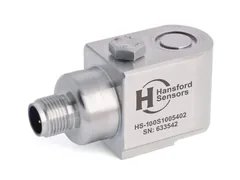 | HS-100 | Cảm biến gia tốc IEPE tiêu chuẩn | 100 mV/g, ngõ ra AC | 2-pin MS / 4-pin M12 | Motor, bơm, quạt — ứng dụng phổ thông |
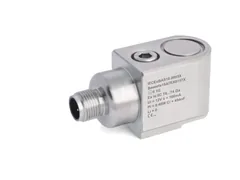 | HS-104 | Low power, nhiều biến thể | 100 mV/g, ngõ ra AC | 3-pin MS / 4-pin M12 | Bản ATEX (I), side exit (S), triaxial (R), kèm nhiệt độ (T) |
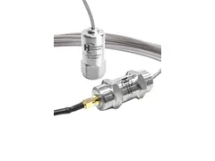 | HS-105 | Chịu nhiệt độ cao | 100 mV/g, cáp low-noise | Top / side exit | Quạt lò, lò quay xi măng, khu vực nhiệt cao |
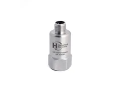 | HS-107 | Line drive | Ngõ ra line drive | 2-pin MS / 4-pin M12 | Truyền tín hiệu khoảng cách xa, bản ATEX |
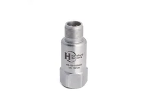 | HS-150 | Đa biến thể lọc / nhiệt cao / IS | 100 mV/g | 2-pin MS / 4-pin M12 | Bản filtered (F), high temp (H), intrinsically safe (I) |
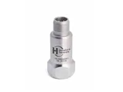 | HS-160 | Ngõ ra vận tốc | AC velocity | 2-pin MS / 4-pin M12 | Đo vận tốc rung trực tiếp, có bản kèm nhiệt độ |
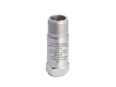 | HS-172 / HS-173 | Đa trục | 100 mV/g, 2 hoặc 3 trục | 4-pin M12 | Giảm số điểm đo, bản ATEX và bản thân tròn |
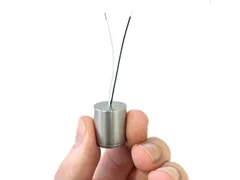 | HS-004 / 050 / 070 | Capsule (thân nhỏ) | 100 mV/g, ngõ ra AC | Tuỳ cấu hình | Không gian lắp đặt hạn chế |
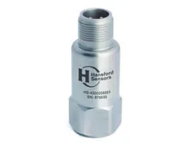 | HS-420 (LPS) | Bộ phát tín hiệu vòng lặp 4-20 mA | bộ phát tín hiệu 4-20 mA dòng LPS | — | Đấu thẳng vào PLC/DCS, không cần bộ phân tích rung riêng |
Ngoài cảm biến, danh mục còn gồm đế lắp, bu-lông và nam châm gá cảm biến, cáp & đầu nối, vỏ đấu nối (enclosures) và bộ đo rung cầm tay. Gửi part number hoặc mô tả điểm đo để Fast Group xác nhận mã chính xác và thời gian giao hàng.
Giám sát quạt hút, máy nghiền, con lăn lò quay trong môi trường bụi và nhiệt độ cao — tham khảo cấu hình cảm biến cho nhà máy xi măng.
Bơm ly tâm, máy nén khí, turbine trên giàn và nhà máy xử lý — yêu cầu bản ATEX/IECEx bản chất an toàn và chứng từ EN 10204 3.1.
Quạt gió, bơm cấp nước lò hơi, motor công suất lớn vận hành liên tục — giám sát online kết nối DCS.
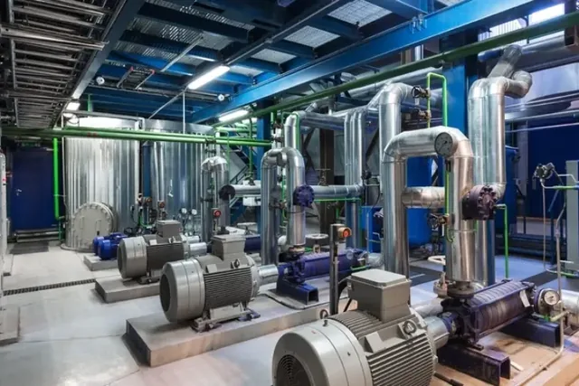
Máy xeo, lô sấy, bơm bột — môi trường ẩm, cần cáp và đế lắp chống ăn mòn.
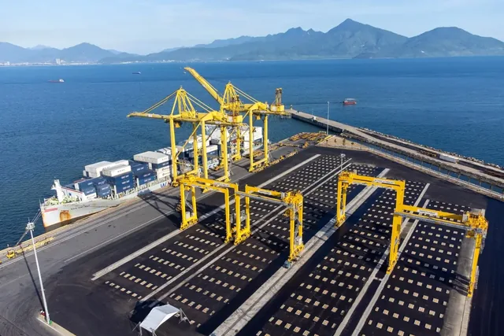
Cẩu trục cảng, máy chính, máy phát và bơm ballast — môi trường độ mặn cao, chọn thân inox 316.
Băng tải, máy nghiền, quạt lò — tải va đập lớn, ưu tiên dòng HS-150 bản filtered.
Mỗi ngành có bộ tiêu chí chọn cảm biến khác nhau về dải tần, nhiệt độ, cấp bảo vệ IP và vật liệu thân. Xem thêm các ngành công nghiệp Fast Group phục vụ.
Nếu nhà máy đã có bộ phân tích rung hoặc card thu thập dữ liệu, chọn cảm biến IEPE 100 mV/g (dòng HS-100/104/150). Nếu chỉ có PLC/DCS với card analog input tiêu chuẩn, dùng bộ phát 4-20 mA — tín hiệu ra là giá trị RMS đã xử lý, đấu thẳng vào card AI mà không cần thiết bị trung gian.
Nhiệt độ bề mặt máy trên 120 °C cần dòng HS-105 kèm cáp low-noise chịu nhiệt. Môi trường ẩm, hoá chất hoặc ngoài trời cần thân inox 316 và cáp PUR/FEP thay vì cáp bọc lưới tiêu chuẩn.
Với Zone 0/1/2 hoặc Zone 20/21/22, bắt buộc dùng phiên bản ATEX/IECEx bản chất an toàn (ký hiệu hậu tố I) kết hợp barrier Zener hoặc bộ cách ly galvanic phía phòng điều khiển. Chứng chỉ cần nộp kèm hồ sơ nghiệm thu — Fast Group cung cấp đầy đủ bản gốc theo lô hàng.
Bắt vít (stud mount) cho dải tần rộng nhất và ổn định nhất; đế nam châm phù hợp đo định kỳ theo tuyến; keo epoxy dùng khi không thể khoan. Phương pháp lắp ảnh hưởng trực tiếp đến dải tần hữu dụng — chọn sai làm mất hoàn toàn dải tần cao nơi xuất hiện lỗi vòng bi giai đoạn sớm.
Các mã tiêu chuẩn thuộc dòng HS-100 và HS-150 thường có sẵn tại kho nhà máy, thời gian từ khi xác nhận đơn đến khi hàng về Việt Nam khoảng 3–5 tuần tuỳ phương thức vận chuyển. Các cấu hình đặc biệt (cáp dài theo yêu cầu, bản ATEX, triaxial) cần thêm thời gian sản xuất.
Fast Group xử lý trọn gói khâu nhập khẩu và thông quan — xem chi tiết dịch vụ nhập khẩu & logistics và hỗ trợ kỹ thuật sau bán hàng.
Có. Fast Group là nhà phân phối chính thức của Hansford Sensors tại thị trường Việt Nam, nhập hàng trực tiếp từ nhà máy tại Anh Quốc và cung cấp đầy đủ chứng từ xuất xứ, chứng nhận chất lượng cùng thư xác nhận phân phối khi hồ sơ thầu yêu cầu.
Chọn 100 mV/g (IEPE) nếu nhà máy đã có bộ phân tích rung hoặc hệ thu thập dữ liệu chuyên dụng — tín hiệu thô cho phép phân tích phổ tần và chẩn đoán sâu. Chọn 4-20 mA nếu chỉ cần giám sát mức rung tổng và muốn đấu thẳng vào PLC/DCS sẵn có mà không đầu tư thêm phần cứng.
Có. Nhiều dòng có biến thể bản chất an toàn (Intrinsically Safe) đạt ATEX và IECEx, ký hiệu bằng hậu tố I trong part number — ví dụ HS-104 bản ATEX, HS-107 bản ATEX, HS-150I. Các mã này cần lắp cùng barrier Zener hoặc bộ cách ly galvanic phía vùng an toàn.
Mã tiêu chuẩn thường mất khoảng 3–5 tuần tính từ lúc xác nhận đơn hàng đến khi hàng về Việt Nam. Cấu hình đặc biệt như cáp dài theo yêu cầu, bản ATEX hoặc cảm biến ba trục cần thêm thời gian sản xuất tại nhà máy.
Được. Gửi ảnh nhãn, mã cũ hoặc mô tả điểm đo (loại máy, nhiệt độ bề mặt, khu vực phân loại nguy hiểm) — Fast Group đối chiếu và đề xuất mã thay thế tương đương. Bạn cũng có thể tự tra trước trên danh mục cảm biến gia tốc Hansford.
Có. Với các dự án giám sát liên tục, Fast Group hỗ trợ khảo sát điểm đo, tư vấn phương pháp lắp đặt, chọn cáp và sơ đồ đấu nối vào hệ điều khiển. Liên hệ qua trang liên hệ hoặc gọi trực tiếp (+84) 938 888 958.
Chưa tìm thấy câu trả lời? Xem thêm ứng dụng Hansford Sensors theo từng ngành công nghiệp hoặc gửi câu hỏi kỹ thuật cho đội ngũ Fast Group.
Gửi part number hoặc mô tả nhu cầu — Fast Group hỗ trợ kiểm tra mã, báo giá, nhập khẩu, chứng từ và xử lý đơn hàng nhanh.